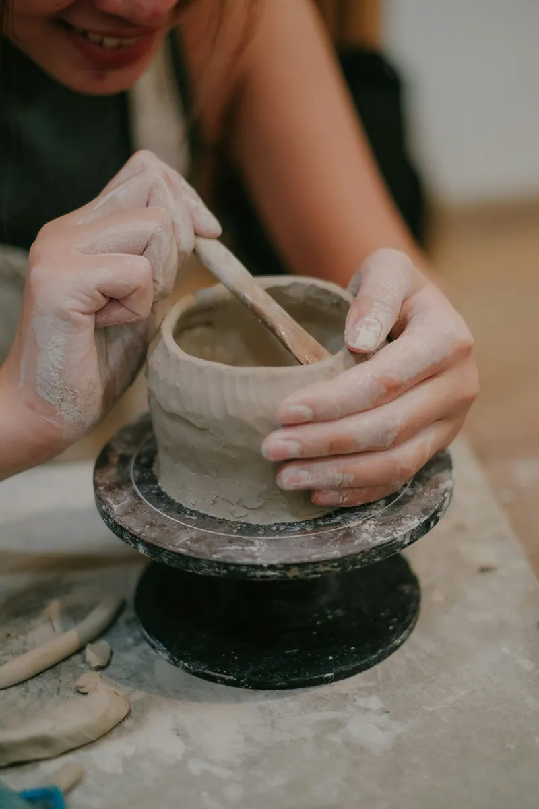
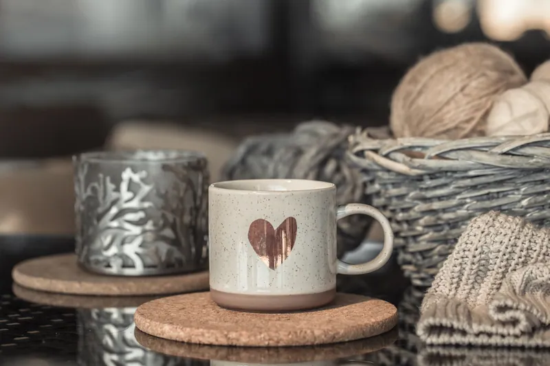
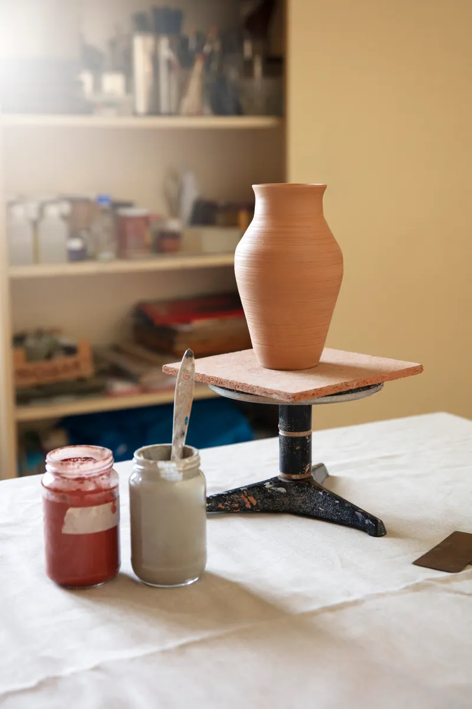

Első találkozás az agyaggal
Korongozó kóstoló
Próbáld ki, hogyan formálódik az agyag a kezed alatt. Kezdőként is csatlakozhatsz.
1 alkalom · 3 óra
Szentendrei kézműves műhely
Kezdőbarát korongozás kis csoportban, egy hangulatos szentendrei kerámiaműhelyben.

Programok és alkotóélmények
Első találkozás az agyaggal
Próbáld ki, hogyan formálódik az agyag a kezed alatt. Kezdőként is csatlakozhatsz.
1 alkalom · 3 óra

Alapok négy alkalom alatt
Adj időt az alkotásnak: négy alkalmon át ismerkedhetsz a korongozás alapjaival.
4 alkalom · 4 × 2,5 óra

Közös élmény
Közös kikapcsolódás a korong mellett, ahol a csapat együtt próbálhatja ki az agyagformálást.
Egyeztetett időpont · Egyedi időtartam
Az alkotó és a helyszín
Fehér Dóra vagyok, az Agyagpad alapítója. Az első korongozó foglalkozásomon az fogott meg, hogy az agyag minden apró mozdulatra válaszol. Ebből a kíváncsiságból született meg később a saját szentendrei műhelyem.
Ma olyan bögréket, tálakat és tányérokat készítek, amelyeket jó kézbe venni a hétköznapokban. A foglalkozásokon pedig azt szeretném megmutatni, hogyan indulhatsz el te is. Kis csoportban dolgozunk, hogy mindenkinek jusson figyelem és segítség az első mozdulatokhoz.

Első korongozóélmény.
Saját műhely Szentendrén.
Bögrék, tálak, tányérok.
Alkotás legfeljebb hatfős csoportban.


Kézzel készült használati kerámiák: bögrék, tálak és tányérok. A tárgyakat az oldalon bemutatjuk; online vásárlásra nincs lehetőség.
Csütörtök–vasárnap: 10:00–18:00
2000 Szentendre, Agyagliget köz 4.
Kitalált bemutatócím, nem látogatható műhelyhelyszín.
Érdeklődés és kapcsolat
Válassz programot, vagy írd meg, mi érdekel az Agyagpaddal kapcsolatban. Ajándékozásról és a kerámiákról is kérdezhetsz.
Az űrlapon a bemutatóprojekt működését próbálhatod ki. Beküldésével nem foglalsz valódi tanfolyami helyet. A prototípus nem küld üzenetet.